20 лучших облачных платформ для онлайн-обучения (Отзывы пользователей и основные функции для 2026 года)

Ключевые выводы
- Облачные платформы для управления обучением устраняют необходимость установки программного обеспечения и обслуживания оборудования, обеспечивая доступ к управлению обучением через интернет с любого подключения.
- Ведущие облачные решения для управления обучением, такие как Docebo, предлагают создание контента на основе ИИ, возможности обучения для различных аудиторий и функции безопасности корпоративного уровня.
- Современные облачные платформы для управления обучением интегрируются с существующими бизнес-инструментами через API и предустановленные подключения, обеспечивая автоматизированную регистрацию, отслеживание сертификации и получение данных для измерения эффективности обучения.
- Корпоративные организации получают наибольшую выгоду от облачных платформ для управления обучением при управлении сложными требованиями к обучению для различных аудиторий, включая сотрудников, клиентов и партнеров в регулируемых отраслях.
Введение
Облачная система управления обучением может оказать значительное влияние на организации, особенно в связи с цифровизацией обучения и внедрением ИИ в нашу работу. Но не любая система управления обучением подойдет. Если платформа кажется неудобной или ненадежной, это сказывается и на обучающихся – и, как следствие, на их вовлеченности. Фактически, 29% команд обучения и развития отмечают, что ошибки и плохой пользовательский опыт препятствуют вовлеченности. Это – проблема, с которой ни одна организация не хочет сталкиваться.
Вот тут на помощь приходит современная платформа для обучения, основанная на искусственном интеллекте, такая как Docebo. Когда обучение интуитивно понятно, персонализировано и легко в использовании, это полностью меняет ситуацию. Вместо раздражающих кликов и незавершенных курсов, вы получаете вовлеченных учащихся, которые действительно хотят вернуться и продолжать учиться.
Чтобы помочь вам найти подходящий вариант, мы проанализировали лучшие облачные платформы LMS на 2026 год. Этот гайд предлагает сравнительный анализ того, что каждая платформа делает лучше всего, чтобы вы могли выбрать платформу, которая поддерживает ваших учащихся сегодня и развивается вместе с вашей организацией завтра.
Обзор 20 лучших облачных программ для LMS для онлайн-обучения
| | | |
| — | — | — |
| Компания | Подходит для | Не подходит |
| Docebo | Предприятия, обучение на основе ИИ, персонализированное онлайн-обучение для различных, разнообразных аудиторий | Команды, ищущие легкую или базовую LMS без ИИ, автоматизации или масштабируемости для предприятий |
| iSpring Learn LMS | Структурированное онлайн-обучение, особенно для команд, уже использующих контент на основе PowerPoint | Организации, нуждающиеся в глубокой кастомизации, расширенных возможностях ИИ или масштабном обучении для всей организации |
| TalentLMS | Небольшие и средние команды, желающие простое, облачное LMS для быстрого создания и доставки курсов | Сложные корпоративные среды обучения с расширенным отчетом, интеграциями или многопользовательскими потребностями |
| Litmos | Обучение, ориентированное на соответствие требованиям, стандартизированная доставка курсов и быстрая развертка в распределенных командах | Высоко персонализированные учебные среды или организации, отдающие приоритет обучению на основе ИИ |
| EducateMe | Совместное, основанное на группах обучение и онлайн-обучение с живым инструктором | Масштабное корпоративное обучение, использование, ориентированное на соответствие требованиям, или требования к расширенным аналитическим возможностям |
| MoodleCloud | Гибкость с открытым исходным кодом для организаций, желающих полный контроль над кастомизацией и хостингом | Команды, ищущие готовое к использованию LMS с современным UX, встроенным ИИ и минимальными техническими требованиями |
| SkyPrep | Растущие организации, ищущие простое онлайн-обучение с сильной поддержкой клиентов | Высоко сложные учебные экосистемы или расширенные аналитические и навыки |
| LearnWorlds | Создание, маркетинг и продажа онлайн-курсов для внешних учащихся с встроенными инструментами электронной коммерции | Корпоративное внутреннее обучение или программы обучения, ориентированные на соответствие требованиям, в масштабе |
| 360Learning | Совместное обучение и контент, созданный участниками, в быстро меняющихся командах | Формальное обучение, ориентированное на соответствие требованиям, или организации, нуждающиеся в строго контролируемых рабочих процессах обучения |
| ProProfs | Простое онлайн-обучение, тесты и обмен знаниями для небольших команд | Корпоральные программы обучения с расширенными интеграциями или аналитикой |
| Absorb LMS | Организации среднего и крупного размера, ищущие отполированное LMS с сильной отчетностью и управлением учащимися | Команды, ищущие глубокую автоматизацию на основе ИИ или высоко персонализированные учебные среды |
| Blackboard Learn | Высшие учебные заведения, предоставляющие структурированные академические курсы онлайн | Корпоративные команды обучения, ориентированные на повышение квалификации, производительность или влияние на бизнес |
| LearnUpon | Программы обучения для клиентов и партнеров, требующие надежной доставки и отчетности | Организации, ищущие передовые возможности ИИ или глубокую персонализацию обучения |
| Canvas | Образовательные учреждения и академические учебные среды | Корпоративное или корпоративное обучение, ориентированное на навыки, производительность или соответствие требованиям |
| Thrive | Современные, контент-ориентированные учебные среды с сильным акцентом на вовлеченность и UX | Высоко регулируемые отрасли, требующие сложного отслеживания и отчетности о соответствии требованиям |
| Adobe Learning Manager | Смешанные учебные среды, тесно интегрированные с экосистемой Adobe | Организации, ищущие широкие возможности интеграции с третьими сторонами или глубокие аналитические возможности на основе ИИ |
| Skilljar | Программы обучения и онбординга для клиентов, особенно для компаний SaaS | Внутреннее обучение сотрудников или использование, ориентированное на соответствие требованиям |
| WorkRamp | Усиление продаж, обучение продаж и обучение клиентов для растущих компаний | Общее корпоративное обучение или высоко персонализированные архитектуры обучения |
| Tovuti | Комплексные решения LMS с встроенным созданием контента и геймификацией | Крупные предприятия, нуждающиеся в расширенных аналитических возможностях или сложной доставке для различных аудиторий |
| Thinkific | Предприниматели и компании, продающие онлайн-курсы и продукты обучения | Внутреннее корпоративное обучение или программы обучения в масштабе предприятия |
Мы подробно рассмотрим каждый из них в ближайшее время, но сначала давайте рассмотрим основные моменты.
Что такое облачная LMS?
Облачная LMS – это ваша платформа для обучения, которая предоставляется через веб-браузер – без необходимости установки программного обеспечения или управления серверами. Представьте себе, что это ваше любимое веб-приложение: вы просто входите в систему с любого устройства и мгновенно получаете доступ ко всем своим курсам и учебным материалам. Это система, которая позволяет вам сосредоточиться на обучении, а не на IT.
В отличие от традиционных систем, которые ограничивают вас наложеной аппаратной частью, облачная LMS дает вам свободу масштабировать обучение по мере необходимости. Все обновления, безопасность и обслуживание происходят автоматически в фоновом режиме, поэтому вы всегда будете использовать последнюю версию без каких-либо сбоев. Этот подход также переносит ваши затраты с крупной первоначальной инвестиции на предсказуемую подписку, что делает мощные технологии обучения более доступными.
В конечном итоге, это освобождает вас от управления технической инфраструктурой и позволяет вам делать то, что вы делаете лучше всего: создавать исключительные образовательные опыты. Вы можете сосредоточиться на развитии своих сотрудников и достижении реальных результатов. Технология просто работает, поэтому вы можете сосредоточиться на влиянии.
В чем разница между облачной LMS и LMS, размещенной самостоятельно?
Все сводится к тому, где находится система и кто несет ответственность за ее эксплуатацию.
Облачные LMS, такие как Docebo, размещаются поставщиком и доступны через интернет. Поставщик LMS отвечает за инфраструктуру, обновления, безопасность и производительность, что позволяет вам сосредоточиться на создании и предоставлении отличного опыта обучения.
Самостоятельно размещенный LMS, с другой стороны, находится на ваших собственных серверах. Ваша команда несет ответственность за настройку, обслуживание, обновления, исправление уязвимостей безопасности и масштабирование системы по мере роста ваших потребностей.
На практике это означает, что облачные LMS-платформы разработаны для более простого управления и более быстрого развития, в то время как системы, размещенные самостоятельно, предлагают больше прямого контроля, но требуют значительно больше технических знаний для обеспечения их бесперебойной работы.
Давайте рассмотрим преимущества друг друга и посмотрим, почему облачный LMS может быть наиболее подходящим для вашей организации.
Преимущества облачного LMS по сравнению с самостоятельно размещенным
Облачные LMS-платформы имеют ряд очевидных преимуществ, особенно для организаций, которые хотят, чтобы обучение оставалось гибким, современным и легко масштабируемым. Вот некоторые из их преимуществ:
- Они быстрее развертываются и проще в обслуживании.
Не нужно управлять серверами или планировать время простоя для обновлений. Новые функции, улучшения производительности и обновления безопасности происходят автоматически в фоновом режиме.
- LMS, такие как Docebo, легко масштабируются.
Независимо от того, обучаете ли вы 50 или 50 000 учащихся в разных аудиториях, облачный LMS, такой как Docebo, может расти вместе с вами, не требуя дополнительных инфраструктурных или ИТ-ресурсов.
- Они поддерживают современные методы обучения.
Облачные платформы для обучения созданы для мобильного доступа, удаленных команд, видеообучения и персонализации на основе искусственного интеллекта, что облегчает взаимодействие с обучающимися там, где они находятся.
- Они позволяют вашим командам сосредоточиться на обучении, а не на технологиях.
Вместо устранения неполадок в системах, вы можете тратить больше времени на разработку программ, которые стимулируют вовлеченность, развитие навыков и влияние на бизнес.
- Они снижают затраты и операционные расходы.
С облачной LMS вам не нужно инвестировать в оборудование или заниматься постоянным обслуживанием. Вы избегаете скрытых затрат на обновления, исправления и инфраструктуру, что делает обучение более предсказуемым и экономичным в долгосрочной перспективе.
- Они облегчают и делают обучение более взаимосвязанным.
Облачные платформы бесшовно интегрируются с инструментами, которые уже используют обучающиеся, такими как приложения для совместной работы, видеоконференции, библиотеки контента и инструменты для повышения производительности. Это поддерживает обучение в контексте работы и облегчает совместное обучение, а не в изолированных средах.
20 лучших облачных LMS платформ с отзывами пользователей
1. Docebo

Лучше всего подходит для: Корпоративных, AI-ориентированных, персонализированного онлайн-обучения для множества, разнообразных аудиторий
О Docebo
Docebo предоставляет комплексную облачную систему управления обучением, которая преобразует подход организаций к обучению для различных аудиторий. Платформа специализируется на персонализации на основе ИИ и широкой автоматизации для расширенных возможностей предприятия, что делает ее идеальной для компаний, управляющих сложными экосистемами обучения. Благодаря своему унифицированному подходу к обучению сотрудников, клиентов и партнеров, Docebo выделяется как лидер в области облачных LMS-программ.
Основные функции:
- Автоматическое создание курсов и генерация контента на основе ИИ для быстрого создания курсов
- Продвинутая аналитика и отчетность для измерения влияния обучения на бизнес
- Бесшовное интегрирование с существующими корпоративными системами для удобного управления пользователями
- Расширенные возможности для предприятий, поддерживающие обучение сотрудников, клиентов и партнеров
- «Безголовое» обучение для внедрения обучения в любом месте, от веб-сайтов до приложений и порталов, при этом сохраняется полный контроль над брендом
- Мобильное приложение для удовлетворения потребностей обучающихся
- Интеграция с инструментами видеоконференций, такими как Zoom, MS Teams, GoToWebinar и др.
- Поддержка нескольких языков и многопользовательская среда, идеально подходящая для глобальных программ обучения
Отзывы пользователей:
“Я нахожу быструю реализацию и готовую конфигурацию Docebo очень полезными. Платформа предоставляет разумные настройки для курсов, пользователей и навигации, что позволяет быстро запускать обучающие программы. Я ценю ее масштабируемость и более широкие возможности настройки, а также более качественный общий опыт обучения. Первоначальная настройка была довольно простой и базовой.” — Поло С.
“Я ежедневно использую Docebo и считаю его очень удобным, простым в навигации, и я легко могу найти то, что мне нужно.” — Синди С.
“Мне нравятся мобильные приложения и поддержка нескольких устройств от Docebo, которые в основном используются для мобильных устройств. Это позволяет учащимся получать доступ к курсам, видео, уведомлениям и учебным планам со своего смартфона или планшета, обеспечивая настоящую гибкость и повышая вовлеченность. Первоначальная настройка была довольно простой и не заняла много времени.” — Мэри Р.
“Я использую Docebo для отслеживания прогресса учащихся, что позволяет легко определить, кто из них ленивы. Мне нравится, как Docebo отслеживает прогресс, используя аналитику. Это упростило мне понимание, какой контент удовлетворяет потребности моих учащихся, и работать над устранением их недостатков. Раньше мне было сложно отслеживать прогресс учащихся, но теперь я могу легко это делать, пока они учатся. Это помогает мне видеть, является ли контент или тесты сложными, и экономит мне много времени, которое я раньше тратил на проверку отзывов и реакцию учащихся.” — Имад Г.
2. iSpring LMS

Лучше всего подходит для: Структурированного онлайн-обучения, особенно для команд, уже использующих контент на основе PowerPoint
О iSpring LMS
iSpring LMS — это облачная система управления обучением, которая объединяет доставку курсов с встроенными инструментами для создания контента. Платформа позволяет организациям создавать, управлять и отслеживать учебные программы через единый веб-интерфейс.
Основные возможности:
- Интегрированные инструменты для создания контента, позволяющие создавать интерактивные курсы на основе форматов, таких как PowerPoint
- Социальное обучение с встроенным чатом для общения с авторами курсов
- Обучающая среда, адаптированная для мобильных устройств, доступная на различных устройствах
- Комплексные возможности отслеживания и отчетности о прогрессе учащихся
- Соответствие стандартам SCORM и xAPI для совместимости контента
- Удобный интерфейс, разработанный для нетехнических администраторов
Отзывы пользователей:
«Платформа очень удобна в использовании — как для администраторов, которые настраивают курсы, так и для учащихся, которые их используют. Загрузка контента проста, а интеграция с iSpring Suite позволяет легко преобразовывать презентации в интерактивные курсы, которые бесшовно интегрируются в LMS.» — Уильям Р.
«Настройка имеет меньше возможностей по сравнению с некоторыми крупными платформами LMS. Хотя интерфейс понятен и прост в использовании, есть меньше возможностей для настройки внешнего вида или полной персонализации учебного пути учащегося. Для большинства случаев это не является проблемой, но организации, желающие получить обширную настройку, могут заметить ограничения.» — Питер Д.
«После тестирования нескольких различных продуктов, мы выбрали iSpring, потому что он предлагал наиболее удобный интерфейс за эту цену.» — Джон А.
«Время ответа технической поддержки иногда бывает медленнее, чем я хотел бы, но я сталкивался и с худшим. Обычно около 24 часов.» — Эван Н.
3. TalentLMS
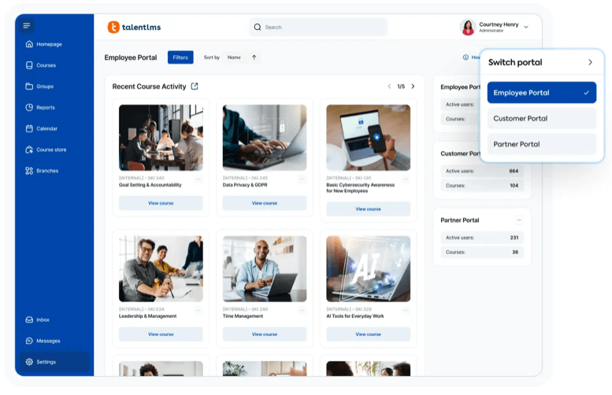
Лучше всего подходит для: Небольших и средних команд, которые хотят простое, облачное LMS для быстрого создания и доставки курсов
О TalentLMS
TalentLMS — это облачная система управления обучением, которая ориентирована на предоставление простых решений для обучения. Платформа позволяет организациям создавать, управлять и отслеживать учебные программы на нескольких порталах с единой панели управления.
Основные функции:
- Функциональность для управления несколькими порталами для управления различными брендами или подразделениями
- Инструменты для создания и управления контентом на основе ИИ
- ИИ-тренер для проверки знаний
- Возможности оценки и сертификации
- Панель управления отчетами и аналитикой
- Адаптивный дизайн для обучения на любом устройстве
Отзывы пользователей:
“Я ценю TalentLMS за его простой и удобный интерфейс, который позволяет легко ориентироваться и управлять задачами, такими как создание новых курсов, назначение их группам и управление доступом пользователей. Интерфейс хорошо структурирован и интуитивно понятен, что позволяет мне, как супер-админу, эффективно достигать своих целей без путаницы.” — Пушкар Д.
“Talent LMS отличается простотой управления, загрузки курсов, их назначения и отслеживания завершения. Это легко.” — Ануша П.
“Функции отчетности очень базовые. Невозможно создать отчеты о курсах, сгруппированных в учебную программу. Создание курсов также использует самый простой софт, поэтому обучение не такое динамичное, как хотелось бы.” — Шани М.
*“Я думаю, что TalentLMS в целом – отличный продукт и хорошо спроектирован. Однако, наше обучение предназначено для внешних клиентов, и было бы неплохо, если бы была возможность настроить учебные пути. Это включало бы рекомендации для учащихся по доступу к внешним ресурсам.”
Также больше возможностей для брендинга компании. В настоящее время пользователи знают, что получают доступ к нашим обучающим материалам через сторонний инструмент (больше возможностей для главной страницы, чтобы она выглядела как веб-сайт компании). — Аннет В.
5. Litmos
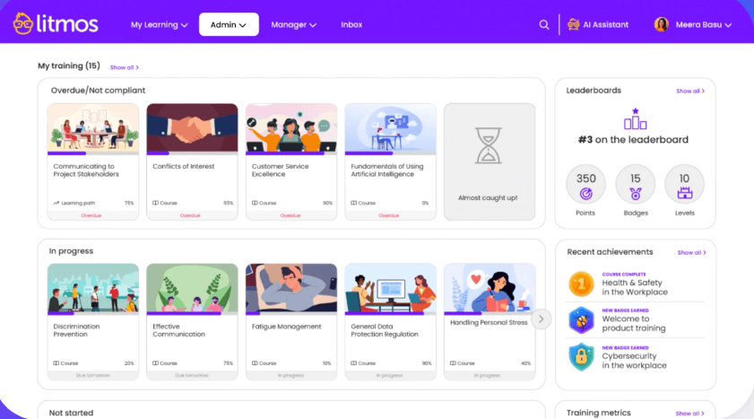
Лучше всего подходит для: Обучения, ориентированного на соответствие требованиям, стандартизированной доставки курсов и быстрого развертывания в распределенных командах
О Litmos
Litmos — это облачная LMS, разработанная для того, чтобы помочь организациям быстро и эффективно предоставлять согласованное обучение в масштабе. Она часто используется для соответствия требованиям, онбординга и обучения, связанного с нормативными требованиями, с сильным акцентом на простоту развертывания и централизованное управление. Litmos поддерживает глобальные команды, упрощая назначение, отслеживание и отчетность о необходимых учебных материалах в разных местах и для разных ролей.
Основные функции:
- Встроенное управление соответствием требованиям и сертификацией
- Центральное назначение курсов и автоматические напоминания
- Отчеты и дашборды для отслеживания завершения и статуса соответствия требованиям
- Обучение, адаптированное для мобильных устройств, для сотрудников на передовой и удаленных работников
- Интеграция с распространенными HR- и бизнес-системами
Отзывы пользователей:
“Удобная платформа, которая облегчает навигацию как для обучающихся, так и для администраторов LMS.” — Маджабин Дж.
“Раздел «Отчеты» не так интуитивно понятен и требует значительной настройки для создания отчетов. Отслеживание конкретных пользовательских полей и анализ данных об обучающихся требует больше усилий, чем это должно быть. Я также сталкивался с периодическими проблемами с функциональностью поиска в разделе «Люди» и при использовании движка отчетов.” — Бхану В.
“Система иногда кажется немного жесткой, когда мы хотим адаптировать учебные пути для разных групп обучающихся. Отчеты и аналитика хорошие, но могли бы быть более настраиваемыми с помощью персонализированных панелей управления.” — Бен К.
«В компании Whatfix, наши основные материалы для обучения и обеспечения соответствия требованиям создаются и управляются централизованно через Litmos. Мы активно используем все доступные функции в нашей системе Litmos, начиная от создания курсов и управления учебными программами, и заканчивая отчетностью, оценками и сертификацией.» — Poornima V.
6. EducateMe
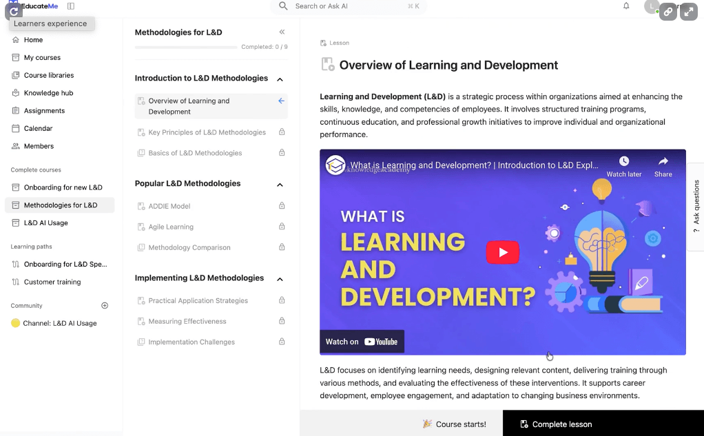
Лучше всего подходит для: Совместного обучения, основанного на группах, и онлайн-обучения с живым участием инструктора
О EducateMe
EducateMe предоставляет облачное решение LMS с инструментами искусственного интеллекта для оптимизации разработки ваших учебных программ. Также предлагается в качестве LMS с возможностью брендирования, позволяя организациям полностью настраивать внешний вид и функциональность своей LMS в соответствии со своим брендом. Кроме того, EducateMe ориентирован на групповое и онлайн-обучение, поэтому он хорошо подходит для команд, которые отдают приоритет сотрудничеству и взаимодействию, а не более структурированному обучению.
Основные функции:
- Создание курсов на базе искусственного интеллекта, включающее ролевые игры и автоматическую проверку
- Аналитика для отслеживания прогресса учащихся
- Интеграция с популярными приложениями, такими как Google Calendar, Zoom, Slack и Stripe для электронной коммерции
- Возможность брендирования для полного контроля над настройками
Отзывы пользователей:
«Ранее процесс адаптации состоял из комбинации Google Docs, звонков по Zoom и «спросите человека, сидящего рядом». Мне нравится, насколько легко добавлять интерактивные элементы, а не просто скучные PDF-файлы, чтобы люди действительно взаимодействовали с материалом. Автоматизированный отслеживание прогресса – это спасение; я могу видеть, кто быстро осваивает материал, а кто нуждается в дополнительной поддержке». — Ольга Б.
«Поскольку это новая платформа, существует множество возможностей для новых функций и дальнейшего улучшения за счет интеграций». — Лео М.
«Отсутствие конкретного мобильного приложения, на мой взгляд, является единственным недостатком. Нативное приложение было бы еще более удобным для людей, которые проходят обучение в дороге, хотя веб-версия хорошо работает на телефонах и планшетах». — Владислав Б.
“Для нас очень просто разрабатывать очень индивидуальные треки для нашей сети партнеров, используя EducateMe. Мы можем разметить контент один раз, и у нас будет система, которая автоматически создает персонализированные учебные пути на основе роли, уровня опыта или региона.” — Денис С.
6. MoodleCloud

Лучше всего подходит для: Гибкости с открытым исходным кодом для организаций, которые хотят полного контроля над настройками и хостингом
О Moodle Cloud
MoodleCloud — это облачная версия LMS Moodle, которая устраняет необходимость для организаций управлять своими серверами и технической инфраструктурой. Платформа объединяет гибкость открытого исходного кода с удобством облачного хостинга, делая продвинутое управление обучением доступным для организаций любого размера.
Основные функции:
- Интегрированное видеоконференцсвязь для до 100 пользователей
- Инструменты для создания курсов для генерации контента электронного обучения
- База знаний для технической самообслуживания
- Базовые возможности брендинга и настройки доменного имени
Отзывы пользователей:
«Как специализированная система управления обучением (LMS), Moodle предоставляет полностью интегрированный набор инструментов, предназначенных для поддержки и управления учебным процессом, специфичным для высшего образования.» — Лилиана К.
«Интерфейс выглядит устаревшим и немного запутанным. Иногда требуется слишком много времени, чтобы найти простые вещи. Настоятельно рекомендуется, чтобы кто-то знал, как им пользоваться, иначе вы быстро потеряетесь. Было бы неплохо, если бы он был более простым и современным.» — Хонсало А.
«Одна вещь, которая мне не нравится, заключается в том, что я не могу установить дополнительные плагины, так как использую Moodle Cloud. Я надеялся использовать определенные шаблоны, которые требуют плагины, поскольку они помогли бы сделать нашу систему управления обучением более организованной и благоприятной для обучения.» — Бернадэт А.
*«Moodle – это удобная и простая в использовании система. Она предоставляет широкий набор активностей и ресурсов, которые поддерживают разнообразные стили обучения и совместной работы.»
Moodle предлагает недорогой и надежный вариант по сравнению с проприетарными платформами LMS. — Юлий Г.
7. SkyPrep
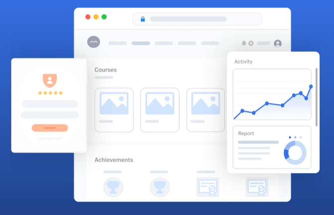
Лучше всего подходит для: Растущих организаций, которые ищут простой онлайн-обучение с надежной поддержкой клиентов
О SkyPrep
SkyPrep — это облачная LMS, разработанная для упрощения онлайн-обучения для команд, которые хотят быстро начать работу. Платформа ориентирована на простоту использования и практическую поддержку, помогая организациям создавать, предоставлять и отслеживать обучение без сложной настройки или технических сложностей.
Основные функции:
- Инструменты для создания курсов, включающие оценки и проверки знаний
- Отчеты и аналитика для отслеживания прогресса учащихся
- Возможность многопользовательского доступа для обслуживания всех ваших разнообразных аудиторий
- Автоматизация рабочих процессов для регистрации на курсы и других задач
- Интеграции с распространенными бизнес-инструментами
Отзывы пользователей:
“Мне очень нравится, что SkyPrep позволяет нам предоставлять информацию в режиме реального времени по всей стране, что является критически важным для наших национальных учебных мероприятий.” — Дэниел В.
“Оно отлично справляется со всеми основными задачами: загрузкой видео, PDF-файлами, викторинами и отслеживанием курсов. Настройка учебных траектов для таких вещей, как обучение инструкторов, адаптация новых сотрудников или доступ к корпоративным ресурсам, проста и эффективна.” — Винсент Б.
“Процесс внедрения, хотя и функциональный, мог бы выиграть от большей структуры. Я хотел бы, чтобы были доступны шаблоны или руководства с четкими рекомендациями о том, как настроить платформу, например, примеры использования определенных функций. Хотя мой менеджер по работе с клиентами просто замечательный, первые звонки больше напоминали Q&A сессию, что заставляло меня сомневаться в том, какие вопросы задавать. Я бы предпочли больше поддержки, включая пошаговые ресурсы, чтобы я мог увереннее ориентироваться в системе.” — Тирней П.
“Огромное количество функций означает, что изменение настроек может приводить к ошибкам пользователей. К счастью, у нас есть менеджер по работе с клиентами (Мэдисон), который очень полезен и хорошо разбирается в вопросе. Их служба поддержки также очень оперативна и компетентна.” — Арвинд К.
8. LearnWorlds
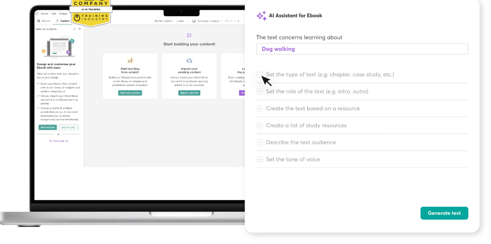
Лучше всего подходит для: Создания, продвижения и продажи онлайн-курсов для внешних учащихся с встроенными инструментами электронной коммерции
О LearnWorlds
LearnWorlds — это облачная платформа для онлайн-обучения, разработанная для создателей курсов и образовательных предприятий. Платформа специализируется на решениях с белым этикетом и создании интерактивного контента, что делает ее идеальной для предпринимателей и организаций, которым требуется строгий контроль над брендом. Благодаря встроенным возможностям электронной коммерции и функциям сообщества, LearnWorlds превращает обучение в полноценную бизнес-экосистему.
Основные функции:
- Конструктор курсов с инструментами для создания интерактивного контента
- Белый этикет для создания индивидуального брендинга и персонализированных URL-адресов
- Интеграция с электронной коммерцией для продажи и подписки на курсы
- Геймификация с использованием баллов, достижений и значков
Отзывы пользователей:
“Я использую LearnWorlds уже давно, и она предоставляет нам интерактивные видео, тесты, кнопки, заметки внутри видео и многое другое. LearnWorlds предоставляет все необходимое для создания онлайн-курса, а также инструменты для его создания. Она проста в использовании, и моя команда часто использует ее для создания купонов, воронки и т.д.” — Sourabh C.
«Как человек, занимающийся тестированием программного обеспечения, я ценю надежность и качество платформы. Конструктор курсов интуитивно понятен, а хостинг видео быстрый и бесперебойный. Все работает без ошибок и сбоев, что крайне важно при ведении бизнеса.» — Хемант Р.
«Хотелось бы, чтобы были дополнительные стимулы или значки, связанные с завершением курса, а не только с обсуждениями в сообществе.» — Бриттни В.
«LearnWorlds можно улучшить следующим образом:
1) Предоставить лучший способ навигации между административным интерфейсом для управления курсами и пользовательским интерфейсом, перемещение между ними очень сложно. Мне приходится держать административный раздел открытым в другом окне и использовать опцию «правый клик» для открытия в другом окне.
2) Должно быть возможно создание сертификатов для курсов непосредственно в LearnWorlds, а не через внешнюю службу.
3) Хотелось бы, чтобы была возможность предложить и создать «привязанный» поиск на стороне администратора, например. Я хочу видеть только курсы для международных студентов и не тратить время на просмотр и фильтрацию всех курсов, когда мне нужно сосредоточиться на определенном наборе курсов за пределами США. Я использую фильтрацию по категориям, но этот поиск не сохраняет результаты. Поэтому мне приходится пересортировать каждый раз.” — Кэтрин Г.
9. 360Learning

Лучше всего подходит для: Совместного обучения и контента, созданного пользователями, в быстро меняющихся командах
О 360Learning:
360Learning — это облачная система управления обучением, которая делает акцент на совместном обучении посредством обратной связи от коллег и контента, созданного пользователями. Платформа позволяет организациям создавать, распространять и отслеживать учебные программы, одновременно способствуя обмену знаниями между командами.
Основные функции:
- Генерация контента и создание курсов на основе ИИ с использованием шаблонов и оценок
- Возможности социального обучения для сотрудничества и обратной связи между коллегами
- Элементы геймификации, включая баллы, достижения и значки
- Возможность брендирования под собственные нужды
Отзывы пользователей:
“Я считаю, что 360Learning очень прост в использовании для создания обучающего контента, не требуя специальных знаний в области создания обучения. Мне нравится возможность сотрудничества на платформе, особенно форумы, рейтинги и отчеты, а также возможность делиться знаниями.” — BichTram (Ellen) Q.
“Хотя в последнее время были предприняты усилия, мне неприятно, что мы все еще не можем дополнительно настраивать платформу, особенно группы. Например, на платформе представлены два разных бренда, но нам невозможно использовать два цвета на платформе.” — Mathilde C.
“Мне нравится, что 360Learning прост в использовании; нам не нужно обучать наших конечных пользователей использованию платформы. Создателям контента легко разрабатывать контент, даже из PDF или PowerPoint.” — Marie B.
“Я заметил, что, несмотря на то, что 360Learning довольно всеобъемлющая и интуитивно понятная, в настоящее время отсутствует возможность проводить живые ролевые игры с использованием ИИ, что могло бы улучшить процесс обучения.” — Нора С.
10. ProProfs (LMS)

Лучше всего подходит для: Простых онлайн-курсов, тестов и обмена знаниями для небольших команд
О ProProfs
ProProfs Training Maker – это облачная LMS, разработанная для команд, которым необходимо быстро запускать курсы и тесты без значительных IT-ресурсов. Платформа предлагает конструктор курсов, обширную библиотеку готового контента и неограниченное хранилище для быстрого масштабирования.
Основные функции:
- Создание курсов с использованием ИИ для быстрого и эффективного создания контента
- База знаний для учащихся
- Встроенный Quiz Maker для оценивания, опросов и голосований
- Отчеты и аналитика для отслеживания показателей завершения, оценок, времени выполнения и т.д.
- Интеграция с API с популярными приложениями
Отзывы пользователей:
“ProProfs предлагает чистый, современный интерфейс, который делает создание курсов интуитивно понятным. Поддерживает видео, тесты и PDF-файлы без каких-либо сложностей. Функции клонирования и планирования курсов – это спасение для управления несколькими командами. Он разработан как для новичков, так и для опытных пользователей, что является редкой комбинацией.” — Луис Дж.
“Интерфейс, хотя и интуитивно понятный, в некоторых местах может казаться немного устаревшим. Более современный визуальный редизайн еще больше улучшил бы пользовательский опыт. Также статьи с помощью могли бы содержать более подробную информацию о сценариях использования для продвинутых функций.” — Уэйн Г.
“Это доступное и простое в использовании решение. Редкая комбинация. У нас нет собственного отдела обучения, поэтому возможность быстро создавать и назначать курсы – это огромный плюс.” — Аллегра П.
11. Absorb LMS

Лучше всего подходит для: Средних и крупных организаций, ищущих современную LMS с мощными возможностями отчетности и управления обучением
О Absorb LMS
Absorb LMS – это облачная система управления обучением, которая помогает организациям проводить обучение, управлять соответствием требованиям и отслеживать результаты обучения. Ее интуитивно понятный дизайн и мощные инструменты администрирования поддерживают все, от быстрых курсов для новых сотрудников до многоуровневых программ сертификации.
Основные возможности:
- Создание контента и адаптивное обучение на основе ИИ
- Отчетность и аналитика с отслеживанием обучения
- Белое брендирование и поддержка нескольких языков для обеспечения единообразия бренда
- Социальное обучение и геймификация для вовлечения учащихся
Отзывы пользователей:
“Absorb имеет чистую и интуитивно понятную навигацию как для пользователя, так и для администратора, что очень удобно, так как я использую его несколько раз в день.” — Энни Б.
“Одной из лучших вещей, которые мне нравятся в Absorb, является объем предоставляемой поддержки. Обучение и адаптация были очень простыми, и это сделало использование программы очень интуитивным.” — Эйрон Л.
“То, что мне не нравится в Absorb LMS, заключается в том, что, хотя платформа в целом удобна в использовании, некоторые функции могут быть запутанными или требовать нескольких шагов для выполнения. Наименее полезным аспектом является ограниченная возможность настройки структуры курсов и отчетности, что может ограничивать способы отображения или отслеживания информации.“ — Розета Б.
“Отчеты, как правило, недостаточно гибкие в плане настройки. Отчеты о прогрессе учащихся не обновляются при добавлении новых курсов в систему, что требует большого количества ручного обновления.“ — Карл А.
12. Blackboard Learn
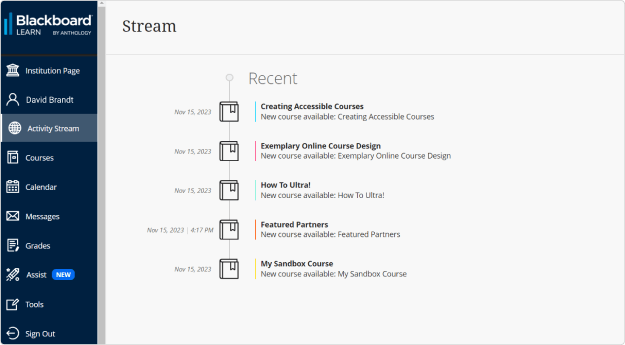
Лучше всего подходит для: Высших учебных заведений, предоставляющих структурированные академические курсы онлайн
О Blackboard Learn
Blackboard Learn предоставляет облачную LMS, разработанную специально для академических учреждений и образовательных сред. Платформа специализируется на мощных академических функциях, таких как продвинутые системы оценивания и инструменты оценки, что делает ее идеальной для университетов и колледжей, управляющих сложными образовательными программами.
Основные функции:
- Инструменты для создания курсов с шаблонами на основе ролей и индивидуальными учебными траекториями
- Проведение оценки с разнообразными вопросами и возможностями оценки в реальном времени
- Оценка и отчетность с автоматической оценкой и панелью аналитики
- Автоматизация процессов для создания курсов и генерации сертификатов
- Совместимость с мобильными устройствами и варианты брендирования
Отзывы пользователей:
«Blackboard выделяется своей надежностью и универсальностью в качестве системы управления обучением (LMS). Особенно мне нравится его способность интегрировать академические инструменты, оценки, аналитику и коммуникацию в единую экосистему, что облегчает управление крупномасштабными курсами.» — Guido G.
«Мне нравится, как я могу легко собирать данные от наших участников. Также мне нравится новая функция с компетенциями.» — Bertha O.
«Ограничение только на 1-браузер.
Он должен быть универсальным, когда речь идет о предпочитаемых браузерах.» — Jerri L.
“Иногда может быть медленным, и кажется, что возможности настройки ограничены” — Кейтлин С.
13. LearnUpon
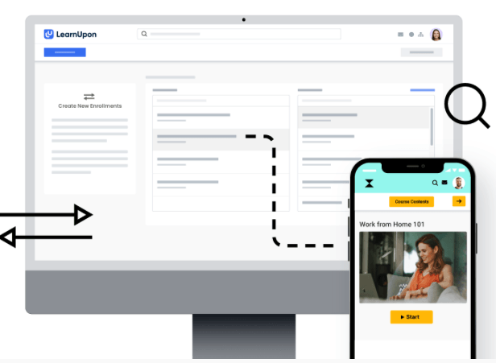
Лучше всего подходит для: Программ обучения для клиентов и партнеров, которым требуется надежная доставка и отчетность
О LearnUpon
LearnUpon – это облачная LMS, разработанная для поддержки обучения для различных аудиторий, включая сотрудников, клиентов и партнеров. Платформа делает акцент на простоте и последовательности, что позволяет легко управлять различными программами обучения в одной среде, сохраняя при этом четкое разделение между аудиториями.
Основные функции:
- Функциональность для управления различными аудиториями
- Инструменты для создания курсов и управления контентом
- Автоматическая регистрация, напоминания и учебные пути
- Отчеты и дашборды для отслеживания прогресса и завершения обучения
- Интеграции с распространенными HR, CRM и другими бизнес-инструментами
Отзывы пользователей:
“LearnUpon – безусловно, лучшая компания и система LMS, с которой мы когда-либо работали. Очень интуитивно понятный интерфейс для учащихся и администраторов, отличная служба поддержки! Я не могу найти достаточно слов, чтобы выразить, насколько это замечательная платформа и люди, которые ее управляют.” — Джейсон С.
“Особенно мне нравятся возможности создания учебных маршрутов и отслеживания прогресса, а также возможность планировать отчетность. Я всегда с нетерпением жду дальнейших улучшений, которые предоставляет LearnUpon LMS.” — Дэниел К..
“Возможности отслеживания прогресса можно улучшить. Отчетность можно улучшить.” — Бэри Л..
“Отчетность не всегда надежна. Данные можно отображать в разных отчетах, которые не всегда соответствуют друг другу.” — Кристина Х..
14. Canvas
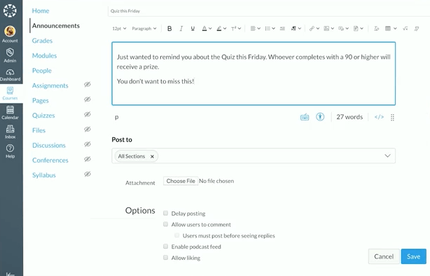
Лучше всего подходит для: Образовательных учреждений и академических учебных сред.
О Canvas
Canvas — это облачная система управления обучением, которая предоставляет образовательным учреждениям инструменты для создания курсов, оценки и вовлечения студентов. Платформа ориентирована на создание интуитивно понятных учебных опытов благодаря своему веб-интерфейсу LMS и совместимости с мобильными устройствами.
Основные функции:
- Конструктор курсов для упрощенного создания контента
- Индивидуальные учебные пути для каждого студента
- Панель аналитики и отчетность для отслеживания успеваемости студентов
- Совместимость с мобильными устройствами для обучения в пути
Отзывы пользователей:
“Мне нравится мобильная доступность и интеграция с Canvas LMS. Курсы и общение хорошо организованы, что облегчает их управление. Основной интерфейс и первоначальная настройка просты в использовании, что является большим плюсом.” — Мани К.
“Платформа проста в навигации и очень удобна в использовании, с бесшовной интеграцией с другим программным обеспечением для обучения.” — Садия Ф.
“Ограничения в интеграции с другим программным обеспечением.” — Эллисса М.
«Хотя Canvas LMS обладает большой мощью, некоторые продвинутые функции имеют более крутую кривую обучения для новых преподавателей, и скорость интерфейса может замедляться при работе с большими курсами или большим объемом мультимедийного контента. Отчеты и аналитика, хотя и полезны, могли бы быть более настраиваемыми для получения более глубоких выводов». — Арун Пракаш С.
15. Thrive

Лучше всего подходит для: Современных, ориентированных на контент учебных опытов с сильным акцентом на вовлеченность и UX
О Thrive
Thrive — это облачная платформа для обучения, разработанная для структурированного контента, социального обучения и открытия, помогающая организациям поощрять непрерывное обучение как часть повседневной работы. Ее часто используют команды, которые хотят, чтобы обучение казалось менее формальным и более интегрированным в рабочий процесс.
Основные функции:
- Инструменты для создания и курирования контента на основе ИИ и обмена знаниями
- Функции социального и совместного обучения
- Персонализированные учебные опыты, основанные на интересах учащихся
- Удобный для мобильных устройств пользовательский интерфейс, похожий на потребительский
- Интеграция с рабочими инструментами для поддержки обучения в процессе работы
Отзывы пользователей:
“Крайне недостаток глубокого отчёта данных, создание контента может быть разочаровывающим, а также использование и интеграция AI-контента и других функций требуют дополнительных затрат. Настройка страниц очень простая, и нет возможности беспрепятственно переводить страницы. Отсутствует возможность полноценного брендирования и настройки.” — Подтверждённый пользователь в сфере потребительских товаров.
“Это отличный способ содержать и отслеживать учебные ресурсы, деловую коммуникацию, общаться с коллегами и делиться другой деловой или продуктовой информацией.” — Rach D.
“Мне очень нравится, как Thrive меняет правила игры в сфере обучения! Это делает обучение более увлекательным для учащихся и помогает создать отличную культуру обучения в компаниях.” — Подтверждённый пользователь в сфере авиации/авиации.
15. Adobe Learning Manager
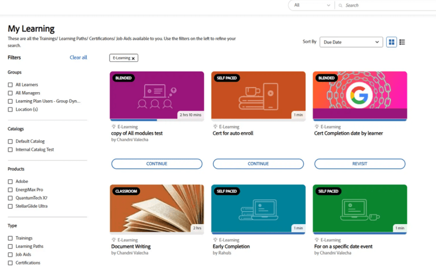
Лучше всего подходит для: Интегрированных с экосистемой Adobe учебных опытов
О Adobe Learning Manager
Adobe Learning Manager — это облачная LMS, разработанная для поддержки персонализированного, смешанного обучения для внутренних и внешних аудиторий. Платформа объединяет самообучение, обучение с участием инструктора и социальное обучение, с сильным акцентом на контент-ориентированные опыты. Ее часто выбирают организации, которые уже используют инструменты Adobe, и хотят, чтобы обучение органично вписывалось в их существующие цифровые процессы.
Основные функции:
- Персонализированные рекомендации и учебные пути
- Рынок контента и интеграция с инструментами Adobe
- Отслеживание навыков и мониторинг прогресса обучения
- Удобные для мобильных устройств учебные опыты
Отзывы пользователей:
“Я работаю в HR, занимаюсь обучением и развитием персонала, и я являюсь администратором, автором, инструктором и учеником. Для меня каждая роль отличается и очень проста и удобна.” — Sneha S
“Навигация по отчётной функциональности платформы может быть сложной.” — Simon B.
“Adobe Learning Manager предоставляет максимальную гибкость и возможности настройки, чтобы помочь нам разработать систему, которая успешно интегрируется в наши команды.” — Конни К.
“Я хотел бы, чтобы у него были более продвинутые функции отчетности, особенно в отношении обратной связи для уровней 1 и 3.” — Патрис Э.
17. Skilljar
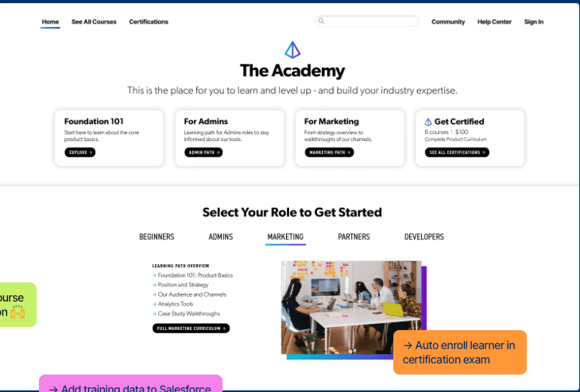
Лучше всего подходит для: Программ обучения и адаптации клиентов, особенно для компаний SaaS
О Skilljar
Skilljar — это облачная LMS, разработанная специально для обучения клиентов и партнеров. Она предназначена для внешних аудиторий и помогает масштабировать адаптацию, сокращать количество обращений в службу поддержки и углублять использование продукта для клиентов, партнеров и команд продаж.
Основные функции:
- Инструс для создания курсов с шаблонами на основе ролей для быстрого создания контента
- Возможность брендирования и расширенные возможности брендинга
- Электронная коммерция для платных курсов и подписок
- Продвинутая аналитика, отчетность по группам и панели управления для учащихся
- Движок сертификации с поддержкой требований соответствия отраслевым стандартам
Отзывы пользователей:
“Мне очень нравится простота использования и внедрения Gainsight Customer Education. Курсы понятные и легко следовать им, с хорошей поддержкой клиентов и простым интеграцией с другими инструментами. Платформа комплексная и полезна для улучшения моих профессиональных навыков.” — Фатима Д.
“Я недавно начал использовать Skilljar и меня поразило, насколько просто его использовать!“ — Кристал Н.
«Хотя платформа мощная, некоторые функции отчетности кажутся ограниченными без расширенной настройки или внешних инструментов для работы с данными. Например, создание подробных пользовательских отчетов требует экспорта и сторонних инструментов, которые можно было бы упростить внутри встроенной панели управления.» — Анкур Г.
«Я считаю, что возможности отчетности в Skilljar by Gainsight ограничены. Базовые функции, такие как кто что выполнил и оценки, доступны, но когда я хочу углубиться или создать пользовательские отчеты, я сталкиваюсь с трудностями. Это ограничение требует экспорта данных в Excel, что занимает много времени. Кроме того, процесс настройки сертификации был немного сложным, несмотря на то, что в целом настройка была простой.» — Ангел М.
18. WorkRamp
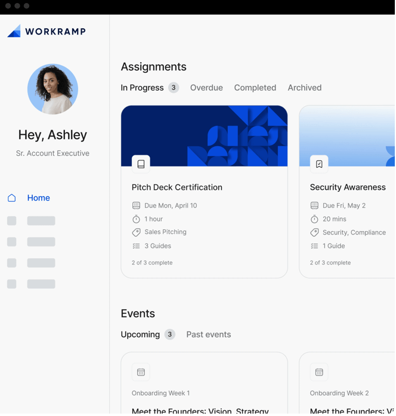
Лучше всего подходит для: Подготовки к продажам, обучения продаж и обучения клиентов для быстрорастущих компаний
О WorkRamp
WorkRamp — это облачная платформа управления обучением, которая позволяет организациям создавать, распространять и отслеживать учебные программы для различных аудиторий. Платформа объединяет традиционные возможности LMS с передовыми функциями искусственного интеллекта для оптимизации создания контента и улучшения учебного опыта.
Основные возможности:
- Создание курсов с использованием контента, созданного на основе ИИ, и индивидуальных учебных траекторий
- Продвинутая аналитика и отслеживание учащихся с наглядной визуализацией в настраиваемом дашборде
- Возможность брендирования и поддержка нескольких языков для индивидуальной настройки бренда
- Поддержка мобильных устройств и интеграция с популярными бизнес-инструментами, такими как Slack
- Геймифицированные элементы, включая баллы, достижения и значки
Отзывы пользователей:
“Очень нравится возможность централизованного обмена контентом с пользователями.” — Адриа Л.
“Понять основы использования (проектирование, настройка) занимает менее часа, и платформа предлагает широкий спектр возможностей для создания курсов с различными мультимедийными и учебными функциями.” — Рой С.
*“Я думаю, что наиболее значительным недостатком Workramp является интерфейс и механизм создания курсов. Он очень громоздкий и технический. Если бы он был улучшен в различной степени, это позволило бы нам постоянно создавать больше и больше курсов непосредственно в программном обеспечении, а не только импортировать их из других источников.” — Эйрон М.
“Функции отчетности довольно ограничены, что может быть неприятным при попытке измерить влияние обучения или получить подробные данные об учащихся. Есть возможности для улучшения в плане создания настраиваемых отчетов и визуализации тенденций вовлеченности или завершения курсов.” — Джейми Д.
19. Tovuti
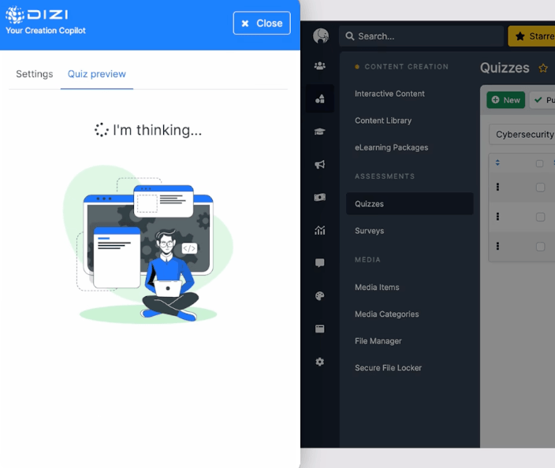
Лучше всего подходит для: Комплексных решений LMS с встроенным созданием контента и геймификацией
О Tovuti
Tovuti — это система управления обучением (LMS), работающая в облаке, которая предоставляет организациям полностью настраиваемую платформу для проведения обучения, создания курсов и вовлечения учащихся. Платформа объединяет традиционную функциональность LMS с передовыми функциями, такими как генерация контента на основе ИИ, возможности электронной коммерции и комплексные варианты брендирования.
Основные функции:
- Инструменты для создания курсов с встроенными оценками и викторинами
- Возможность брендирования и поддержка нескольких языков для глобального развертывания
- Электронная торговая площадка для монетизации курсов и подписок
- Функции геймификации, включая баллы, значки и достижения
- Генерация контента на основе ИИ и адаптивное обучение
Отзывы пользователей:
“Отчетность и аналитика могут быть немного сложными или неполными. Хотелось бы, чтобы было больше вариантов отчетности.” — Джеред Э.
“Создание контента простое, и доступно множество полезных функций. Добавление нескольких пользователей одновременно быстро и просто, с возможностью настройки полей в соответствии с потребностями вашей организации.” — Бен Б.
“Функция отчетности в Tovuti не идеальна. Нам пришлось экспортировать данные через наш API, чтобы получить точную отчетность для наших клиентов.” — Эмман Ф.
«Команда поддержки: они быстро отвечают на запросы и гарантируют, что вы получите решение в течение нескольких часов» — Nishan M.
20. Thinkific

Лучше всего подходит для: Предпринимателей и компаний, продающих онлайн-курсы и обучающие продукты
О Thinkific
Thinkific — это облачная LMS, разработанная для того, чтобы помочь вам создавать, продвигать и продавать онлайн-курсы под своим брендом. Она сочетает в себе интуитивно понятные инструменты для создания курсов с возможностями электронной коммерции, чтобы доход и обучение находились в одном месте.
Основные функции:
- Инструмент для создания курсов «перетаскиванием и бросанием» с шаблонами на основе ролей и поддержкой мультимедиа
- Белые метки: собственные домены, цвета и интерфейсы для соответствия вашему бренду
- Встроенная электронная коммерция: подписки, разовые платежи, купоны и наборы
- Пути обучения и последовательное планирование для структурированного прогресса
- Аналитика и отчетность, отображающие данные о завершении, вовлеченности и доходах
Отзывы пользователей:
“Некоторые возможности дизайна и настройки ограничены, а расширенные функции доступны только в планах более высокого уровня. Было бы здорово иметь больше гибкости в оформлении страниц, больше контроля над дизайном оформления заказа и доступ к расширенным функциям без необходимости перехода на более дорогие планы.” — Мануэль Алехандро Д.
“Мне нравится, что Thinkific предоставляет нам полноценную платформу для создания курсов, не требуя большого объема кастомизации, что позволяет нам сосредоточиться на контенте и опыте обучения, а не на создании технологий с нуля.” — Дэниел Б.
“Я думаю, что UX некоторых страниц-лендингов можно значительно улучшить. Для одного из наших студентов, когда он попадает на эту страницу, это не очень вдохновляет, и мы ограничены в том, насколько мы можем ее настроить, как ее создатели.” — Мария Г.
«Аналитика, хотя и полезна, могла бы быть более всеобъемлющей, и некоторые аспекты настройки дизайна могут требовать знания программирования.» — Deepak T.
Теперь, когда мы подробно рассмотрели все ведущие облачные платформы для обучения, пришло время выбрать лучшую для вашей организации.
Выбор лучшей облачной платформы для обучения для вашей организации
Переход в облако — это не просто технологическое обновление, это превращение вашей программы обучения в мощный инструмент для вашей организации. Вам нужна платформа, которая обеспечивает гибкость и интеллект, необходимые для удовлетворения сложных требований к обучению сегодня, а также готовит вас к будущему.
Посмотрите, например, на Bethany Care Society. Перейдя на Docebo, они сократили время адаптации новых сотрудников на 45% и освободили 372 часа работы преподавателей в год, что показывает, как правильная платформа превращает адаптацию из операционной головной боли в стратегический фактор повышения производительности для вашей команды.
Готовы увидеть, что может сделать высокоэффективная облачная платформа для обучения? Запишитесь на демонстрацию у Docebo, чтобы узнать, как умная автоматизация и бесшовные интеграции могут улучшить ваше обучение и принести измеримые результаты.